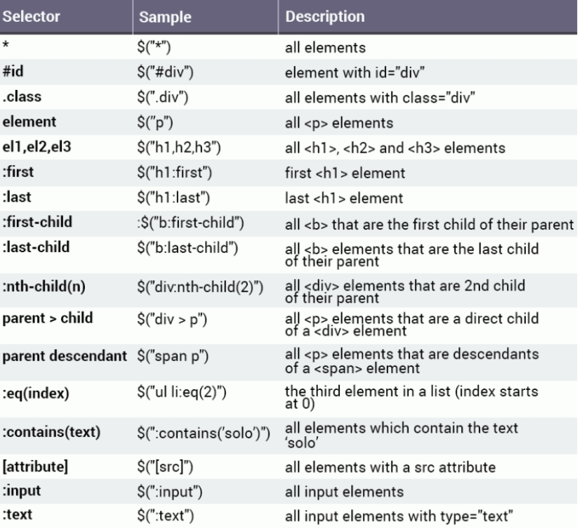
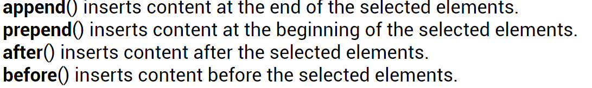
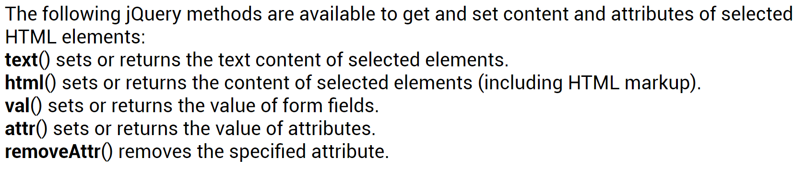

jQuery is a fast phased, small library with additional features to JavaScript.
The main advantages of using jQuery is, that HTML document traversal and manipulation,
event handling and animations are on ex. web pages much simpler to implement.
jQuery is accessed via basic JavaScript.
Accessing and manipulating HTML with jQuery
The dollar sign, $, works as an accessor for a given selector tag, id or class declaration etc.
in HTML. The jQuery language can then manipulate the HTML-content.
$("selector").action();
//$ = accessor
Below we can see nearly all possible ways of defining selectors depending on which kind of tag
we want the jQuery to refer to in a certain HTML-document. Then the jQuery language are able to
manipulate these different selectors with different supported methods (next picture).

Methods for adding or inserting different values in HTML:

Methods for getting and setting different values in HTML:

All pictures are from www.sololearn.com in the jQuery learning section.removeClass(); /*The removeClass() method removes one or more class names
from the selected elements.*/
toggleClass(); /*The toggleClass() method toggles between adding/removing
classes from the selected elements, meaning that if the
specified class exists for the element, it is removed, and
if it does not exist, it is added.*/
jQuery playroom!
In this section different examples on the use of jQuery will be demonstrated: